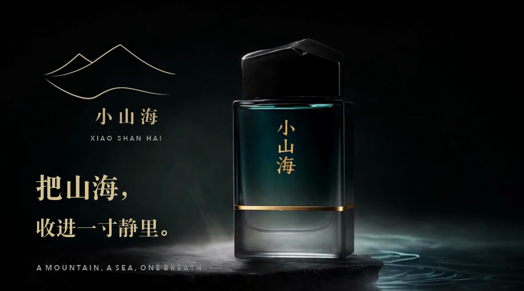
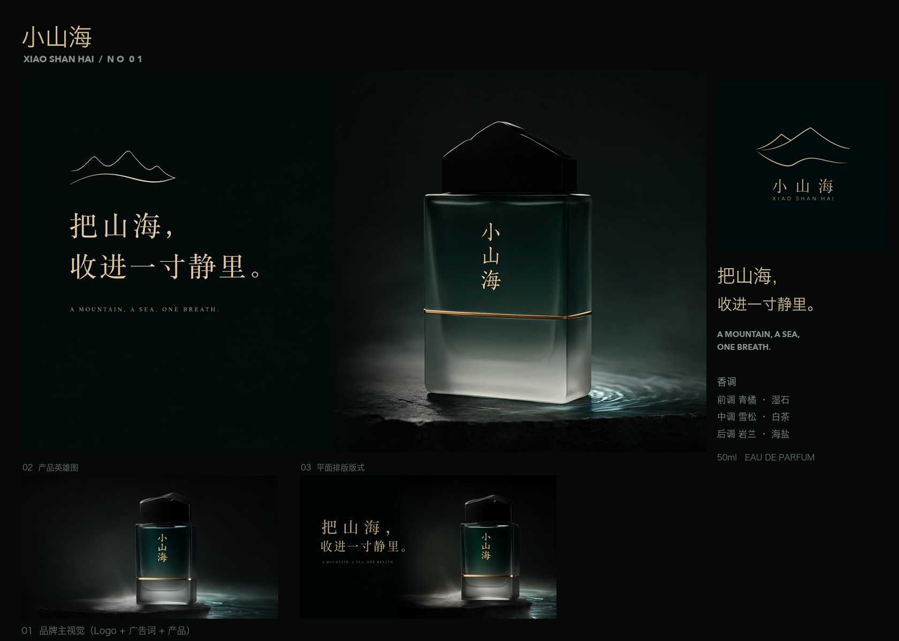

把山海，收进一寸静里。一支以「静」为名的东方香水，用一束轮廓光把瓶身从夜里托出来。
"想要那种电影级的静物感，一瓶香水立在湿石上，外面是雨夜。不要热闹，要安静的高级。"

点击看大图
点击看大图这支片子的气质关键词是「静」。 画面上我想要电影级的静物感：一瓶香水立在湿石上， 周围是暗的，只有一束轮廓光把瓶身从黑里托出来。 不要热闹，不要人群，宁可空。 节奏一定要慢。每个镜头至少四秒，让光自己走。 水面只许有极轻的涟漪，涟漪散开就是剪辑点。 声音方面，环境垫底要低到几乎意识不到， 旁白像自言自语，不要广告腔。 结尾只留 logo 和广告语「把山海，收进一寸静里」， 一秒就好，干净收掉。
| 香调：前调水生矿物感，中调雪松、白茶，后调岩兰草、海盐 | 品牌资料（用户视觉板） | 已核实 |
| 规格 50ml EAU DE PARFUM，广告语「把山海，收进一寸静里」 | 品牌资料（用户视觉板） | 已核实 |
| 目标人群 25–40 岁都市白领，夜间场景使用占比高 | 电商评论摘要 | 已核实 |
| 竞品 A 的主视觉也是暗调静物 | — | 待核实 → 不落画布 |
这一节是「信息」不是「文件」——搜不到的标待核实，落地时丢弃，不虚构。
墨绿近黑基底 + 香槟金高光，低饱和
单一硬光源，边缘轮廓光，深阴影
磨砂玻璃、湿石反光、烫金线
缓推 + 微距特写，浅景深，f/2.0 观感
每镜 ≥ 4s，剪在涟漪散开处
N3 = 广告语原句，出处：用户视觉板（§01 已核实）。
| 镜 | shot | 画面 | 旁白 | 时长 |
|---|---|---|---|---|
| S1 雨夜开场 | 1a | 雨夜街景空镜，霓虹在湿地面拉长（素材待上传） | N1 | 4s |
| 1b | 窗边剪影，石面水汽 | N1 | 3s | |
| S2 静物登场 | 2a | 香水瓶立于湿石，单一轮廓光（参考：静物参考.jpg） | N2 | 5s |
| 2b | 微距：金线反光，涟漪散开 | N2 | 4s | |
| S3 收束 | 3a | 黑场浮现 logo + 广告语（参考：主视觉.png） | N3 | 3s |
| 3b · 备份 | 3a 的替代拍：瓶身特写淡出 | N3 | 3s |
| 角色 | 人读描述 | 锁定提示词（落画布） |
|---|---|---|
| 旁白声音 | 低沉、克制、语速慢，气声多 | narrator: low calm female voice, whispery, slow pace |
| 出镜手模 | 仅手部入镜，持瓶，肤色冷白 | hand model, pale cool skin tone, holding bottle, macro |
人读描述只上这份文档；落画布的只有机器要吃的「锁定提示词」。
| BGM | 值 |
|---|---|
| 风格 | ambient，稀疏单音（依据：用户 BGM 氛围参考.mp3） |
| BPM | 68 |
| 响度 | -16 LUFS |
| 侧链避让 | 旁白出现时 BGM -6dB |
| 素材 | 类型 | 状态 | 引用 |
|---|---|---|---|
| 品牌主视觉参考.png | image | 已就绪 | file:ref-visual.png |
| 电影级静物参考.png | image | 已就绪 | file:ref-still.png |
| 品牌视觉板.png | image | 已就绪 | file:ref-board.png |
| 产品氛围参考.mp4 | video | 已就绪 | file:ref-video.mp4 |
| BGM 氛围参考.mp3 | audio | 已就绪 | file:ref-bgm.mp3 |
| 创意说明.txt | text | 已就绪 | file:ref-brief.txt |
| 场景空镜 · 雨夜街道 | image | 待上传 | — |
| Look 卡 · 暗调静物基调 | image | 已就绪 | canvasNode:n-look |
| 雨夜街道 b-roll | video | 待生成 | canvasNode:n-broll |
| 片尾 logo 动画 | video | 待生成 | canvasNode:n-logo |
落地门禁读这张表：pending 不补齐（或明确 waived），不让落地。
本页为 REQ-037 延伸的交互效果稿：「参考素材」节不进 storyboard.json，渲染时从 §07 按 source=user 派生。全页无 JS，与现网渲染约束一致：